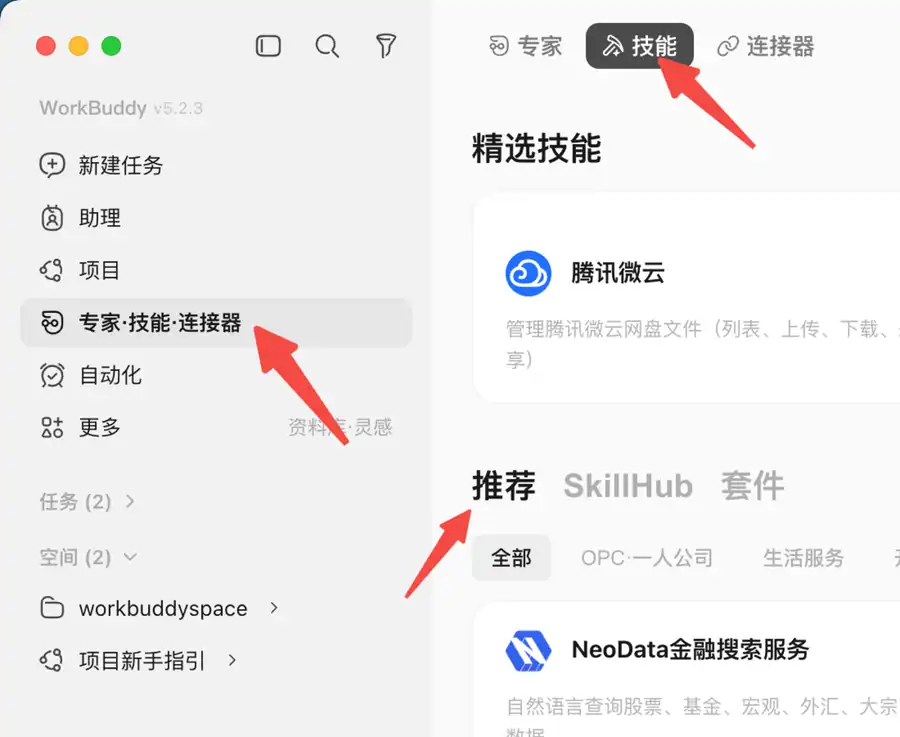
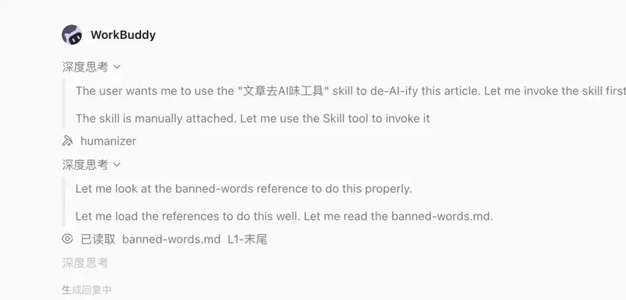
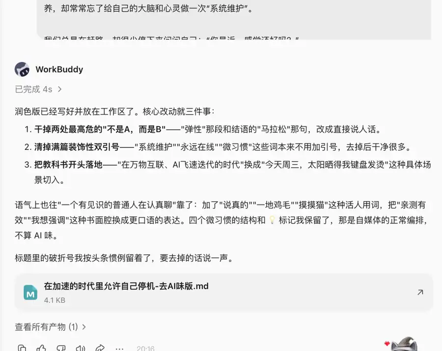
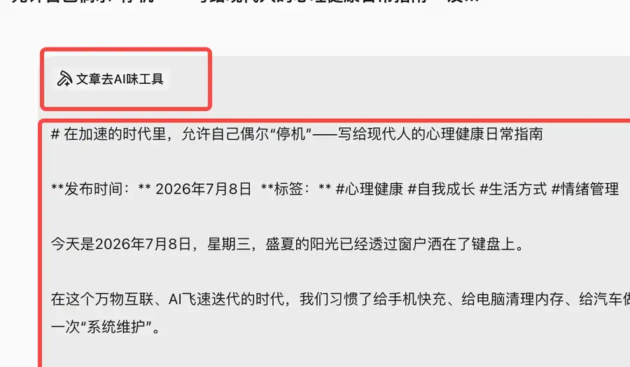

第二章 · 第8次课 · 2学时
Skill：给AI装操作手册
00 知识回顾
上节课我们初识了 WorkBuddy 智能体平台，完成了工作空间的配置与首个任务的分步下发，体验了任务型智能体的高效协同。
01 任务预告
今天，只完成这一个作品
在 WorkBuddy 中真实调用一次 Skill，并完成一份“修改前—修改后—人工核对”对照记录。
第1步建立对照文档
第2步找到合适 Skill
第3步调用并输入材料
第4步比较输出
第5步核对保存
最后交08_Skill调用前后对照_姓名.docx
文档必须含：原文、Skill名称、修改结果、3处变化、人工核对结论。
02 基础概念
先懂三件事，再开始做
概念 1｜Skill：可重复调用的“操作手册”
概念： Skill把一类任务的做法、规则和所需材料打包起来，让AI以后遇到同类任务时按同一套方法处理。
例子： “文章去AI味工具”不是一句临时要求，而是一套可再次调用的改写规则；换一篇文章仍能沿用。
记住： Skill负责“这类任务通常怎样做”，最后这一次要处理什么，仍要由你输入。
真实界面｜找 Skill
看哪里：左侧“专家·技能·连接器”和顶部“技能”。看出什么：先进入技能页，再按用途选择，不要只凭名称猜功能。想一想： 同一类文案每次都要写一大段相同规则时，适合继续用临时提示词，还是做成 Skill？
参考答案：点击展开
更适合做成 Skill，因为共同规则可以重复调用；每次只补充当前材料和具体要求。
概念 2｜提示词与 Skill：一个说“这次做什么”，一个管“这类任务怎么做”
概念： 提示词描述当前任务、材料和交付物；Skill保存可重复的方法、格式和限制。两者配合，不是二选一。
例子： Skill规定“删套话、保留事实、语气自然”；本次提示词再说明“请处理下面这段摄影挑战赛介绍，并控制在120字以内”。
Skill
每次都要遵守的改写步骤、禁用表达和检查方法。
想一想： 只调用 Skill、不提供待处理原文，AI能完成本次改写吗？
参考答案：点击展开
不能。Skill提供方法，本次任务仍需要清楚的材料和要求。
概念 3｜调用与核对：AI执行规则，人判断结果
概念： 调用 Skill 后，WorkBuddy会加载其中的规则并生成结果；结果仍可能删错事实、改变语气或产生不合适表达。
例子： 改写活动介绍时，可以删去“开启精彩旅程”等套话，但不能删掉活动时间、参与对象和提交方式。
真实界面｜Skill正在被调用
看哪里：WorkBuddy下方出现已调用的 Skill 名称和加载过程。看出什么：界面出现调用记录，才说明这次确实在使用 Skill，而不是只在普通对话中描述规则。想一想： 结果读起来更自然，就可以不核对直接发布吗？
参考答案：点击展开
不可以。至少要核对关键事实、语气和长度，确认没有删错或新增信息。
03 核心案例
教师示范｜把“食堂文明用餐倡议”改得自然、具体
案例背景
原文： 为进一步营造文明和谐的校园氛围，让我们携手同行，从我做起，从现在做起，共同开启文明用餐新篇章。午餐高峰请主动排队，用餐后把餐盘送到回收处，并按需取餐、减少浪费。
必须保留的事实： 午餐高峰主动排队、餐后送回餐盘、按需取餐减少浪费。
修改前的问题
- 套话多，具体动作少。
- 学生看完仍不知道要做什么。
- “新篇章”等表达与日常通知不匹配。
参考结果
午餐高峰请按顺序排队；用餐后把餐盘送到回收处；根据食量取餐，吃多少取多少。三个动作做到位，食堂会更整洁，也能减少浪费。
案例怎么判断
- 有效修改： 删套话、补动作、缩短句子。
- 不能改错： 原文给出的三项要求都要保留。
- 最终责任： 教师逐项对照原材料后再采用，不因调用了 Skill 就默认正确。

这是同类 Skill 的结果界面参考，示例文章与本课教师案例不同。观察输出正文和生成文件入口；课堂上要以自己输入的材料为准。
04 实践任务
用 Skill 改写“校园手机摄影挑战赛”介绍
本次只用一段模拟材料：不填写真实姓名、手机号或班级信息。主软件为 WorkBuddy，WPS只负责记录和提交。
①建立对照文档，粘贴原文
软件： WPS文字。
新建文档，建立“原文、使用的Skill、修改结果、三处变化、人工核对”五个标题，再粘贴下面的模拟原文。
模拟原文在这个充满无限可能的时代，校园手机摄影挑战赛不仅是一场比赛，更是一场青春与创意的碰撞。让我们共同开启精彩旅程，用镜头记录每一个闪耀瞬间，书写属于我们的青春华章。活动面向全校学生，作品须为本人使用手机拍摄，9月25日前提交1—3张照片和50字以内说明。
完成标准：五个标题齐全；原文完整；文件先保存为“08_Skill调用前后对照_姓名.docx”。
②找到并确认写作类 Skill
软件： WorkBuddy。
- 按“概念1”的真实界面图，打开“专家·技能·连接器”。
- 进入“技能”，查找“文章去AI味工具”或教师指定的同类 Skill。
- 阅读用途说明，确认它用于文字改写，再记录 Skill 名称。
完成标准：WPS“使用的Skill”下已写明名称和用途。若列表中没有，使用教师课前提供的 Skill；不要把普通提示词冒充 Skill。
③真实调用 Skill，再输入本次要求
软件： WorkBuddy。
- 新建任务，在输入框输入“/”并选择 Skill，或从技能页进入调用。
- 确认输入框附近出现 Skill 名称。
- 复制下面的本次任务要求，粘贴模拟原文后发送。
请使用当前 Skill 处理下方活动介绍。
要求：
1. 删除空泛套话，改成高职学生容易理解的自然表达；
2. 保留参与对象、拍摄设备、截止时间、数量和说明字数；
3. 不新增奖项、费用、名额和联系方式；
4. 结果控制在120字以内，只输出修改后的正文。
【待处理原文】
在这个充满无限可能的时代，校园手机摄影挑战赛不仅是一场比赛，更是一场青春与创意的碰撞。让我们共同开启精彩旅程，用镜头记录每一个闪耀瞬间，书写属于我们的青春华章。活动面向全校学生，作品须为本人使用手机拍摄，9月25日前提交1—3张照片和50字以内说明。

看哪里：材料上方的 Skill 标签。只有选中后再发送，才是在本次任务中调用 Skill。完成标准：界面中能看到已调用的 Skill 名称；复制后可直接发送，四条要求和活动材料完整。
④粘贴结果，找出三处变化
软件： WorkBuddy + WPS文字。
参照“概念3”的调用过程图，等待生成完成；把结果粘贴到“修改结果”，然后在“三处变化”下分别写：删掉了哪句套话、哪条事实被保留、哪句话变得更短或更具体。
完成标准：三处变化都引用修改前后的具体文字，不只写“更好了”。
⑤按事实清单人工核对并保存
软件： WPS文字。
| 检查项 | 通过标准 |
|---|
| 对象 | 仍是“全校学生” |
| 作品 | 本人用手机拍摄，1—3张照片 |
| 时间 | 仍是9月25日前 |
| 说明 | 仍是50字以内 |
| 边界 | 没有新增奖项、费用、名额和联系方式 |
在“人工核对”下写“通过”或写明需修订之处；修改后保存并重新打开一次。
完成标准：五项全部通过；文件名正确；关闭后能重新打开。
05 本课总结
成果卡
| 我的作品 | 文件里应有 | 提交前检查 |
|---|
| Skill调用前后对照 | 原文
Skill名称与用途
修改结果
3处变化
人工核对 | □ 真实调用了Skill
□ 关键事实全保留
□ 没有新增信息
□ 文件能重新打开 |
下节预告： 下节课我们将学习专家团协同，让多个 AI 角色分工配合完成复杂任务。
返回页面顶部 ↑